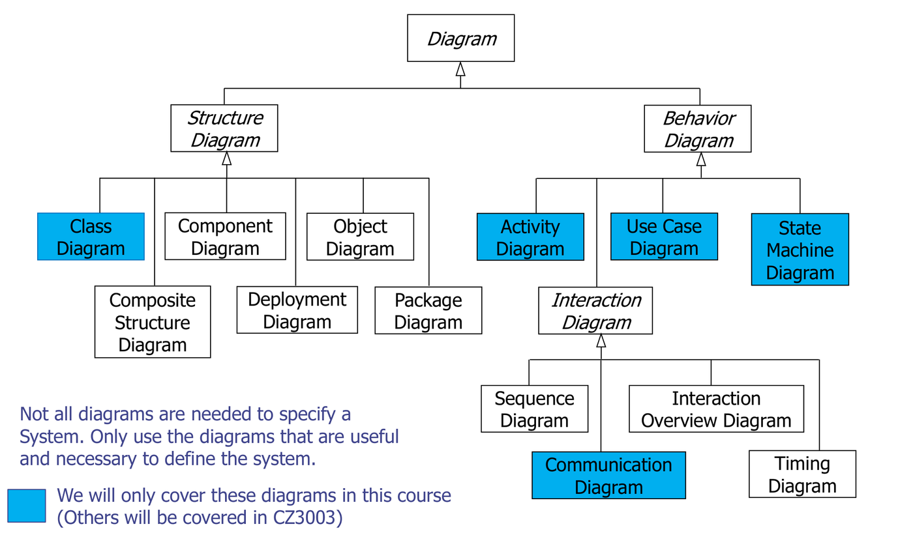
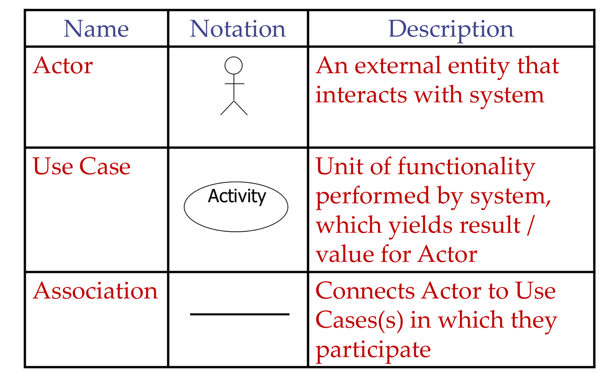
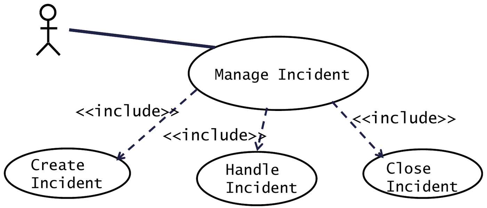
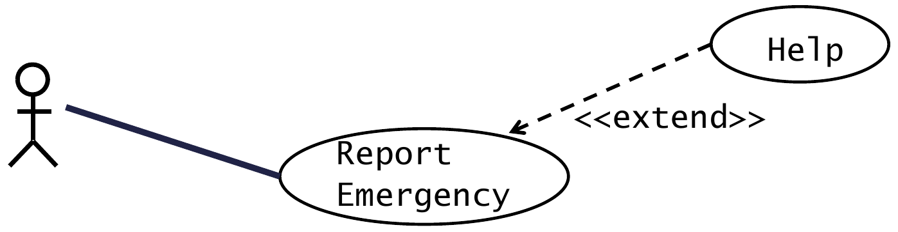
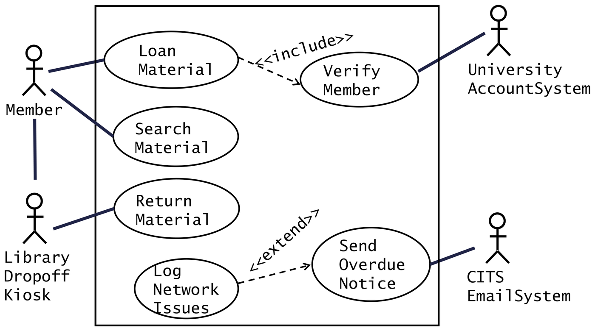
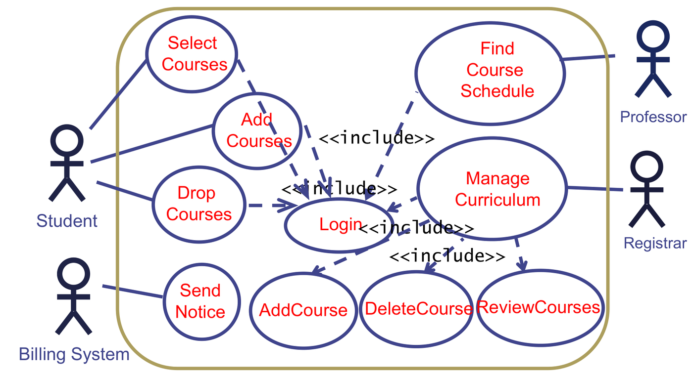
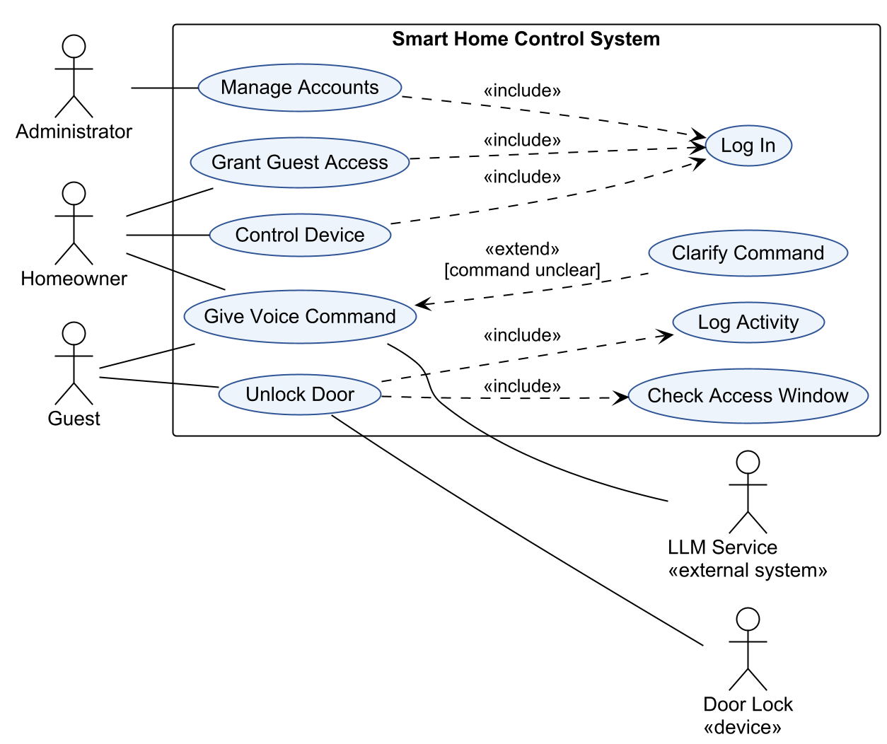

This was written entirely with AI.
UML
UML (Unified Modeling Language) is a standard graphical notation. Booch, Jacobson and Rumbaugh created it in 1996. Teams use it to specify, document and communicate the structure and the behaviour of software systems. UML is not a programming language. Because it is an industry standard, all engineers read the same diagram in the same way.
UML has two families of diagrams:
- Structure diagrams show what the parts of the system are. Example: the class diagram.
- Behaviour diagrams show what the system does over time. Examples: use case, activity and state machine diagrams.

The figure is itself a UML class diagram. Each line with a hollow triangle means “is a kind of”. So a Class Diagram is a kind of Structure Diagram, and a Structure Diagram is a kind of Diagram. Names in italics (Diagram, Structure Diagram, Behavior Diagram, Interaction Diagram) are abstract groups: you never draw “a structure diagram” as such, only one of its kinds. The blue boxes are the five types that this course uses.
Use only the diagrams that help to define the system. A project does not need all of them.
Use cases
A use case describes how a user uses the system to reach one goal. It is a list of steps. In each step, a role (the actor) and the system interact.
Functional requirements and use cases both describe the functions of the system, but at different levels:
- A functional requirement says what the system must do.
- A use case says how the actor and the system interact to do it.
Functional requirements are the starting point for use cases.
The use case model
The use case model has two parts:
- Use case diagram (static). It shows all actors, all use cases, and how they connect.
- Use case descriptions (dynamic). Each use case has a text that gives its steps.
Together they describe the functions of the system in pictures and in text. In iterative development, the team gives each use case a priority and builds the most important use cases first.
The use case diagram
Elements

| Element | Notation | Meaning |
|---|---|---|
| Actor | Stick figure | Something outside the system that interacts with it |
| Use case | Ellipse with a verb phrase | One unit of function that the system does. It gives a result of value to an actor. |
| Association | Solid line | Connects an actor to each use case in which it takes part |
| System boundary | Rectangle with the system name | Everything inside is the system. Actors stay outside. |
Who can be an actor
An actor is a role, not a person. One person can have two roles. An actor can be:
- a human user (Customer, Homeowner, Administrator);
- a device (Sensor, Door Lock, Card Reader);
- an external system (Bank, Email Server, Payment Gateway, LLM service).
The system that you model is never an actor. Only external systems that interact with it are actors.
Actor generalization
When two actors share use cases, you can make a general actor and connect the shared use cases to it. Draw a solid line with a hollow triangle from the special actor to the general actor. Example: Homeowner and Guest both specialise User, and User connects to “Give Voice Command”.
Use case names
Name each use case with a verb + noun that describes a goal: “Unlock Door”, “Grant Guest Access”, “Search Material”. Do not use one click as a use case (“Press OK button”). Do not use a full subsystem as a use case (“Door Module”).
Include and extend
Associations between use cases reduce complexity. There are two kinds.
Include
An include relationship from use case A to use case B means: A always runs all of B. A delegates part of its work to B. B is like a subroutine that A calls.
Use include for two reasons.
Reason 1: functional decomposition
A use case is too complex. Split it into smaller use cases and include them.

Read the figure: the actor connects only to Manage
Incident, with a plain solid line. Three dashed arrows labelled
<<include>> go from Manage
Incident to the three smaller use cases. Each time the
actor manages an incident, the system runs the steps of Create, Handle
and Close Incident. The actor does not connect to the three small use
cases directly, because the actor never starts them alone.
Reason 2: reuse of shared function
Two or more use cases do the same steps. Move those steps into one use case and include it from each of them.

Read the figure: the actor starts two use cases, Open
Incident and Allocate Resources. Both need to
show a map. Instead of writing the map steps twice, the designer writes
them once in View Map. Two dashed
<<include>> arrows point into
View Map, one from each base use case. If the map steps change, only
View Map changes.
Facts about include:
- The arrow is dashed with an open arrowhead. It goes from the base (including) use case to the included use case.
- The included behaviour is required, not optional. The base use case is not complete without it.
- All of the included behaviour runs at one point in the base use case. Then the base use case continues.
Extend
An extend relationship from use case B to use case A means: B sometimes adds behaviour to A, under a condition.

Read the figure: the actor connects to Report
Emergency only. The dashed <<extend>>
arrow starts at Help and points at Report
Emergency. So Help is the extending use case, and Report
Emergency is the base. A user can report an emergency without ever
asking for help, so the base is complete by itself. Help runs only when
the user asks for it, part-way through the report.
Facts about extend:
- The arrow is dashed with an open arrowhead. It goes from the extending use case to the base (extended) use case. This is the opposite direction to include.
- The base use case is complete and meaningful by itself. It does not know about the extension.
- The extending use case is often not meaningful by itself.
- The extension happens only in unusual or exceptional cases, under a condition.
- The extension happens at an extension point in the base use case. Write the extension point and the condition on the diagram, as a note or in the base ellipse.
- One extending use case can extend more than one base use case.
Include or extend: how to choose
Ask: “Does the base use case always need this behaviour?”
| Answer | Relationship | Arrow direction |
|---|---|---|
| Yes, always | <<include>> |
Base → included |
| Only sometimes, under a condition | <<extend>> |
Extending → base |
Memory aid: the arrow always points towards the use case that does not know about the other one. The included use case does not know who includes it. The base use case does not know who extends it.
From requirements to a use case diagram
Method:
- Find the actors. Find each person, device and external system that the requirements mention, other than the system itself.
- Find the use cases. Find each goal that an actor wants from the system. Each goal is usually one verb phrase in a functional requirement.
- Connect actors to use cases with associations.
- Find include and extend relationships. Look for “must first”, “before”, “always” (include) and “if”, “when there is a problem”, “optionally” (extend).
- Check the diagram. There is no single correct diagram, but each use case must come from the requirements. Each use case has at least one actor or is included/extending. Each actor connects to something. No arrow shows data flow or order of steps.
Worked example: a library system
Requirements:
- The library member must be able to search the system for library materials.
- The library member must be able to loan library materials.
- The library management system must verify the library membership with the University Account System before the member can loan library materials.
- The library member must return library materials via the library drop-off kiosk.
- The library management system must send an overdue notice to the member through the CITS Email Server.
- When there are network problems with the CITS Email Server, the library management system must log the event.
Analysis:
- Actors: Member, University Account System (external system), Library Drop-off Kiosk (device), CITS Email System (external system).
- Use cases: Search Material, Loan Material, Verify Member, Return Material, Send Overdue Notice, Log Network Issues.
- Requirement 3 says “before the member can loan”: each loan must verify. So Loan Material includes Verify Member.
- Requirement 6 says “when there are network problems”: this happens only sometimes. So Log Network Issues extends Send Overdue Notice.

How to read the diagram:
- The rectangle is the system boundary: the library management system. All six use cases are inside it. All four actors are outside it.
- Member connects with solid lines to Loan Material and Search Material, the two goals that the member starts.
- Library Dropoff Kiosk connects to Return Material, because returns go through the kiosk (requirement 4). The vertical line from Member to the kiosk shows that the member works through the kiosk. Strictly, a UML use case diagram does not link two actors, so read this line as a note, not as an association.
- Loan Material → Verify Member is a dashed
<<include>>arrow. Every loan runs the verification (requirement 3). University Account System connects to Verify Member, because that external system does the check. - Log Network Issues → Send Overdue Notice is a
dashed
<<extend>>arrow. The arrow starts at the extending use case and points at the base. Logging happens only when the email server has a problem (requirement 6). - CITS Email System connects to Send Overdue Notice, because the system sends the notice through it (requirement 5). No human starts Send Overdue Notice. The system starts it itself when a loan is overdue.
Two common mistakes on this example:
- Leaving out the kiosk. Requirement 4 says that returns go through the kiosk. The kiosk is a device outside the system, so it is an actor.
- Inventing a “Member Login” use case. The requirements do not mention a login. Requirement 3 describes a verification with the university system. Model what the requirements say.
Worked example: course registration
Requirements: the Registrar manages the curriculum. Students select 4 primary and 2 alternate courses, and add or drop courses until the end of week 2. After a student registers, the system notifies the Billing System. Professors find their course schedule. All users must log in first.

How to read the diagram:
- Student (left) connects to Select Courses, Add Courses and Drop Courses. Professor (right) connects to Find Course Schedule. Registrar (right) connects to Manage Curriculum.
- Login sits in the middle. Five dashed
<<include>>arrows point into it, one from each main use case. This is reuse: “all users must log in first” means each main use case always runs Login. - Manage Curriculum has three more
<<include>>arrows, to AddCourse, DeleteCourse and ReviewCourses. This is decomposition: one large use case is split into three smaller ones. - Billing System (bottom left) is an external system, so it is an actor. It connects to Send Notice. The system tells billing about each registration.
- The rounded outline is the system boundary. Some slides draw it with round corners. A plain rectangle is the usual form.
Worked example with all features
A smart home system lets a homeowner control devices and give guests timed access to a door. Guests can unlock the door by app or by voice. An LLM service interprets voice commands.

How to read the diagram:
- Human actors on the left: Administrator, Homeowner and Guest. Each connects with plain lines to the goals that it starts.
- Non-human actors at the bottom right: LLM Service
(an external system) and Door Lock (a device). The labels
«external system»and«device»say what kind of actor each one is. - Log In on the right has three
<<include>>arrows pointing into it. Managing accounts, granting access and controlling devices each need a login first. - Both Homeowner and Guest connect to Give Voice Command, because both can speak to the system. Only Guest connects to Unlock Door in this diagram.
- The LLM Service connects to Give Voice Command, because it interprets the speech. The Door Lock connects to Unlock Door, because it does the physical unlock.
- Unlock Door includes Check Access Window and Log Activity, because each unlock must check the time window and must be logged.
- Clarify Command extends Give Voice Command, because the system asks a clarifying question only when the command is unclear.
- The LLM service and the door lock are outside the system, so they are actors.
The use case description
Each use case needs a description. Use the template:
| Field | Content |
|---|---|
| Use case ID and name | “UC-03 Unlock Door” |
| Actors | Initiating actor: the actor that starts the use case. Participating actors: other actors that take part. If a system event or another use case starts it, the initiating actor is NULL. |
| Description | One or two sentences about the goal |
| Preconditions (entry conditions) | What must be true before the use case can start |
| Postconditions (exit conditions) | What must be true after the use case ends, for success and for failure |
| Priority, frequency of use | For example High / High |
| Flow of events (normal flow) | The numbered main steps when all goes well |
| Alternative flows | Variations or errors that return to the normal flow |
| Exceptions | Problems that make the use case fail and end |
| Includes | The included use cases |
| Special requirements, assumptions, notes | Other information |
Flow of events
The normal flow is the main success path. Its steps alternate:
- The actor does something (this step starts the use case).
- The system responds.
- The actor does the next thing.
- The system responds, and so on.
Use the terms from the data dictionary. Use the active voice. Each step has one subject: the actor or the system.
Alternative flows and exceptions
- An alternative flow is a variation or an error that the system can handle. After it, the flow returns to a step in the normal flow. Number it by the step where it starts. Example: “AF-S5” starts at step 5.
- An exception is a situation that makes the use case fail. The use case ends.
Worked example: withdraw money at an ATM
Actors: Bank Customer (initiating), Bank (participating).
Preconditions:
- The Bank Customer has an account with the Bank.
- The Bank Customer has an ATM card and a PIN.
Postconditions (one of these is true at the end):
- The Bank Customer receives the requested cash, or
- the Bank Customer receives an explanation from the ATM why the cash could not be dispensed.
Flow of events:
| Actor steps | System steps |
|---|---|
| 1. The Bank Customer inserts the card into the ATM. | |
| 2. The ATM requests a six-digit PIN. | |
| 3. The Bank Customer enters a PIN. | |
| 4. The ATM verifies the card and PIN with the account information in the Bank. | |
| 5. If the card and PIN are verified, the ATM requests the amount to withdraw. | |
| 6. The Bank Customer enters an amount. | |
| 7. The ATM verifies that the amount is available in the account. | |
| 8. If the account has sufficient funds, the ATM outputs the money, the card and a receipt. | |
| 9. The Bank Customer removes the card, the receipt and the money. |
Alternative flows:
- AF-S5: If the card and PIN are not valid:
- The ATM shows “Invalid card and PIN. Please try again!” for 2 seconds.
- The ATM returns to step 2.
- AF-S8: If the account has insufficient funds:
- The ATM shows “Insufficient funds in your account! Please enter a smaller amount!” for 2 seconds.
- The ATM returns to step 6.
Exceptions:
- EX1: If the Bank Customer enters a wrong PIN three
times:
- The ATM shows “Card is suspended! Please call customer service (1633) to reactivate the card” for 2 seconds.
- The ATM outputs the card.
- EX2: If the ATM has insufficient cash:
- The ATM shows “This ATM is off-service due to insufficient funds!” at the start screen.
- The ATM does not accept cards.
Note the difference. Each alternative flow ends with “returns to step n”, so the use case continues. Each exception ends the use case.
How to show include and extend in the text
- Include: write it as one step of the base flow. Example: “1. The system uses the included use case Login to verify the Registrar.” The included use case states its entry condition as “invoked as an included use case by Manage Curriculum”.
- Extend: write it in the description of the extending use case. Give the base use case, the extension point and the condition. Example: “Clarify Command extends Give Voice Command at step 3, when the command is unclear.”
Worked example: a guest unlocks a door
Use case: UC-05 Unlock Door
Actors: Guest (initiating), Door Lock (participating)
Preconditions:
- The Homeowner has granted the Guest access to the door.
- The Guest has logged in to the mobile app.
Postconditions:
- Success: the door is unlocked and the event is logged.
- Failure: the door stays locked and the denied attempt is logged.
Flow of events:
- The Guest selects the door and selects “Unlock”.
- The system checks the access window with the included use case Check Access Window.
- The system sends the unlock command to the Door Lock.
- The Door Lock unlocks and confirms to the system.
- The system logs the event with the included use case Log Activity.
- The system shows “Door unlocked” to the Guest.
Alternative flows:
- AF-S2: If the current time is outside the access
window:
- The system shows “Access not allowed at this time”.
- The system logs the denied attempt.
- The use case returns to step 1.
Exceptions:
- EX1: If the Door Lock does not respond within 5
seconds:
- The system shows “Door lock not available. Try again later.”
- The system logs the failure.
- The use case ends.
Includes: Check Access Window, Log Activity.
Getting ready for exam questions
Use case diagram questions give the most marks in the paper (about 18 of 25 in Q1). Check each item:
For use case descriptions: